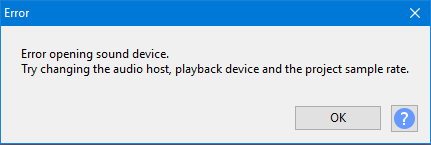
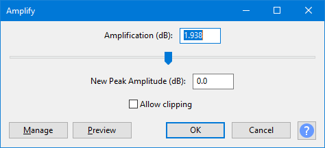

Help Button
The help button is the  icon at the foot of some dialogs. When clicked, it takes you to relevant help information about that dialog in the Manual.
icon at the foot of some dialogs. When clicked, it takes you to relevant help information about that dialog in the Manual.
Error messages
For error messages the help button takes you to brief information about the specific problem.Often there are links from that page. From the links you can find out a lot more.
Example:
Error opening sound device message. Try clicking on the  at the bottom right of this image.
at the bottom right of this image.
- 
Effects, Generators and Analyzers - and Preferences
Audacity currently has help buttons on pages for Effects, Generators and Analyzers and Preferences.Clicking this button will take you to the page for the effect/generator/analyzer or preference section in the Manual.
Example:
The Amplify effect. Try clicking on the  at the bottom right of this image.
at the bottom right of this image.
- 